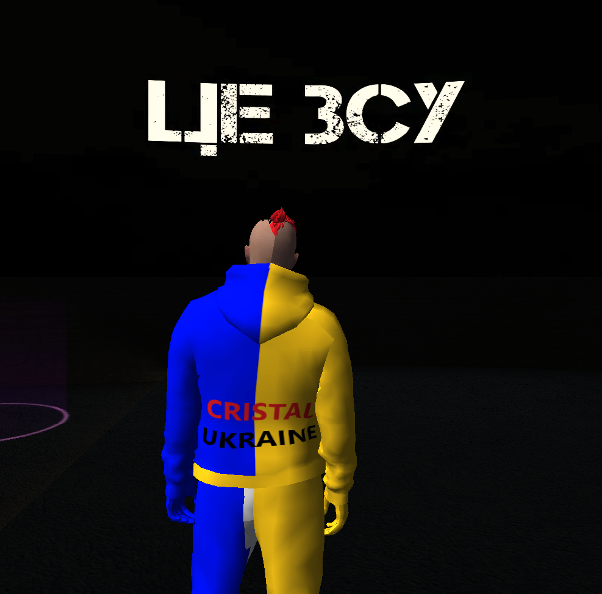

<section id="about" class="about-us section">
  <div class="container">
    <div class="about-us-wrapper">
      <div class="description">
        <p>
          "Cristal Ukraine 1.1" – це гра про Україну з реальними містами України. Cristal Ukraine 1.1 сервер, який пропонує вам відчути на собі Українське  віртуальне життя в уявному Українському світі. Що вас тут чекає, добрі люди, гарна адміністрація та ще, ви зможете  знайти нових друзів або собі дівчіну :). Чекаємо саме тебе на нашому Українському проєкті під назвою CRISTAL UKRAINE 1.1

        </p>
      </div>
      <div class="image-container">
        <picture>
          
        </picture>
      </div>
    </div>

    <div id="experience" class="experience">
      <ul class="accordion">
        <li class="accordion-item">
          <h3 class="accordion-title">
            <button class="accordion-button">
              About me
              <span class="icon-wrapper">
                <svg class="icon-arrow-down rotated" width="18" height="18">
                  <use href="./images/icons.svg#icon-arrow-down"></use>
                </svg>
              </span>
            </button>
          </h3>
          <div class="accordion-content">
            <p>
              I am Lloyd Jefferson, a talented programmer with extensive
              expertise in software development. I have an understanding of
              different programming languages ​​and technologies, always ready
              to improve my skills. I always follow the latest trends and look
              for unconventional, creative solutions to problems. I have a high
              level of analytical skills and am able to effectively solve even
              the most difficult tasks encountered on the way.
            </p>
            <p>&nbsp;</p>
            <p>
              Able to work both independently and in a team. I can effectively
              cooperate with colleagues, exchanging ideas and finding optimal
              solutions. Professional maturity allows you to calmly cope with
              challenges and stressful situations, while maintaining a high
              quality of work.
I am always looking for opportunities for
              self-improvement. I actively study new technologies and practices
              to stay abreast of the latest innovations. I have a strong
              understanding of various programming languages, frameworks and
              architectural concepts that allow me to create efficient and
              scalable software.
            </p>
          </div>
        </li>
        <li class="accordion-item">
          <h3 class="accordion-title">
            <button class="accordion-button">
              Role
              <span class="icon-wrapper">
                <svg class="icon-arrow-down" width="18" height="18">
                  <use href="./images/icons.svg#icon-arrow-down"></use>
                </svg>
              </span>
            </button>
          </h3>
          <div class="accordion-content">
            <p>Frontend development</p>
            <p>&nbsp;</p>
            <p>HeadlessCMS,Wordpress</p>
            <p>&nbsp;</p>
            <p>Blender(enjoy)</p>
          </div>
        </li>
        <li class="accordion-item">
          <h3 class="accordion-title">
            <button class="accordion-button">
              Education
              <span class="icon-wrapper">
                <svg class="icon-arrow-down" width="18" height="18">
                  <use href="./images/icons.svg#icon-arrow-down"></use>
                </svg>
              </span>
            </button>
          </h3>
          <div class="accordion-content">
            <p>
              2018 - 2019 / Frontend Development Diploma, GoIT IT School, New
              York
            </p>
            <p>&nbsp;</p>
            <p>
              2019 - 2020 / Advanced Web Development Certificate, GoIT IT
              School, New York
            </p>
            <p>&nbsp;</p>
            <p>2020 - 2022 / Advanced Blender Animation Techniques, Udemy</p>
          </div>
        </li>
      </ul>
    </div>

    <div class="aboutme-swiper-container">
      <div class="aboutme-swiper">
        <ul class="swiper-wrapper aboutme-swiper-wrapper">
          
        </ul>
      </div>
      <svg class="aboutme-slide-next">
        
      </svg>
    </div>
  </div>
</section>
